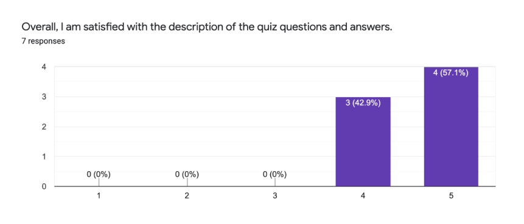
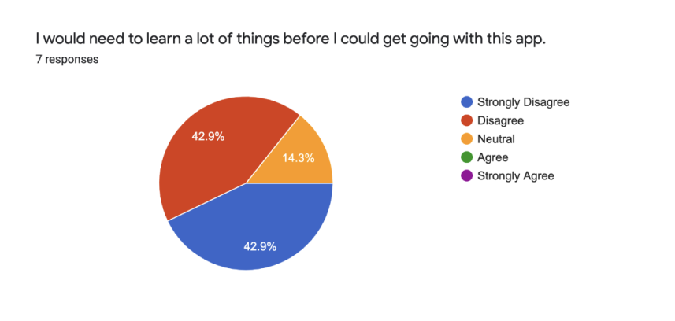

HI-FI USABILITY TESTING
For this stage of usability testing we had 8 participants. The participants fell within our target audience of individuals that are not very familiar with skincare. We used the same three tasks as we did in the first usability test. First, we tested if users were able to navigate to the quiz and take it without any difficulty. Next, we tested if they were able to navigate to the blog tab and find information about certain skincare products. Finally, we tested how they would navigate to a product through the shopping tab. We gave participants the task of finding a cleanser for oily skin. Overall we were testing to see if users were able to start their skincare journey. Would they be able to get information to learn more about skincare? Would they be able to find products that best suited their needs?
Data and Results
Overall, all 7 participants felt that the skincare app worked as intended. For the quiz component of our app, 71.4% of our participants stated they were very satisfied with the ease of completing the quiz. Although the majority of our participants clicked on the ‘Take the Quiz’ button as intended, there were a few exceptions: 2 participants went to the routine button on the navigation bar. One participant who was familiar with skincare stated that she would’ve liked to browse through the products before creating a skincare routine.
All participants were satisfied with the description of the quiz results and answers with 42.9% responding 4 and 57.1% responding 5 on a 5-point Likert scale. There was some confusion with vocabulary such as “dull skin” however, this was still a large improvement from our inital lo-fi prototype in which users were confused about phrasing throughout the app. A participant also wished the questions explicitly stated when she was allowed to choose multiple responses (ie., checkboxes) for a question. All participants found the quiz results to be very informative; they liked the explanation of each skincare step and how they were given skincare product recommendations for each step.
Participants generally reacted positively to the blog component of the app. According to our survey, 71.4% of our participants were satisfied with the ease of navigating through the blog. They felt the content on the blog was easy to understand and liked the recommendations provided. A few participants critiqued the user interface of the blog post itself. One participant commented on the “wall of text” and stated he wished there was more hierarchy and line spacing. Another said they wanted links to the recommended products given.
We received an overwhelmingly positive response to the shopping component of the app. 100% of the participants stated they were satisfied with the amount of time it took to use the shopping filters and find the product they were looking for. 85.7% of our participants were very satisfied with the ease of completing the assigned task. A few participants mentioned how they liked the individual product pages included “highlights,” short descriptors of the benefits of using said product. Another participant pointed out it was extremely easy to navigate through the shopping component of the app because the user interface was similar to other e-commerce apps.
The intended audience for our app are people who are not very familiar with skincare. We believe we have successfully designed an app that caters to this audience. According to our user testing survey given at the end, 85.8% of the participants said they either “strongly disagreed” or “disagreed” about needing to learn a lot of things before using this app, with the remaining one responding stating they were “neutral.” 85.7% of our participants said they did not find the app unnecessarily complex. However, only 14.3% of our participants stated they would very frequently use this app. We believe this is because although the skincare app works as intended, the majority of our participants were not interested enough about skincare to use the app.
Summary
We expected users to be able to navigate through the app fairly easily. That seemed to be the case as users were quickly navigating to different areas of the app without needing us prompting them to do so. Users were able to understand the language of the app fairly easily and complete the given tasks. Users enjoyed the educational aspect of the app. This was good as this was one of our main goals.
Moving forward, there are lots of changes we could make. For the quiz results, we would create some sort of next step. This could be directing the user to their “skincare routine” page and letting them add products to build their routine. Creating some sort of call to action/next step to creating their skincare routine would make the user journey feel more complete instead of abruptly ending. We would want to flesh out the “Routine” page as one of out next steps as well. Another thing we could improve on is the legibility of the blog post itself. The current blog post does not have a lot of hierarchy and the line height of the blog text could be increased.
DOCUMENTATION
Survey Script Consent Form Checklist Figma FileMain Screens
Homepage
Quiz Start
The splash screen users see when they click on the quiz banner.
Quiz Questions
Quiz questions used checkboxes and single option answers. This question is an example of the single answers.
Quiz Results
Users are able to see a skincare profile that helps users learn about their skin and what types of products they should look for.
Blog Dashboard
Blog Post
Blog posts give lots of information about different aspects of skincare to help users learn more about skincare and what works for their skin.
Shopping - View All
Users are able to filter through options to narrow down what type of products they are looking for.